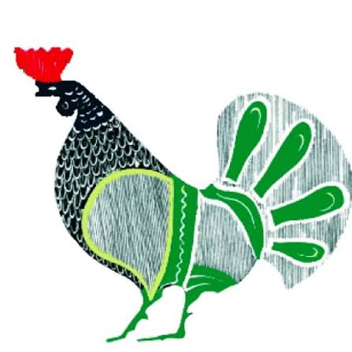

Πατημασιές στα νούφαρα — 90 haiku
Δίγλωσση έκδοση: Ελληνικά & Γερμανικά

Ψηφιακή βιβλιοθήκη · Βιβλία και δημοσιευμένα άρθρα
Εκδόσεις Ηδυέπεια · Επιλέξτε το βιβλίο και τη βιβλιοθήκη στην οποία θέλετε να το διαβάσετε.
Δίγλωσση έκδοση: Ελληνικά & Γερμανικά
Αναγνώσματα της μιας ανάσας για ασθμαίνοντες αναγνώστες.
Προβοκάτορες αφύπνισης.
Ένα Παναρκαδικό κάλεσμα για την Αναγέννηση της Αρκαδίας.
Τα άρθρα παρατίθενται με χρονολογική σειρά. Κάθε τίτλος οδηγεί στην αρχική δημοσίευση.